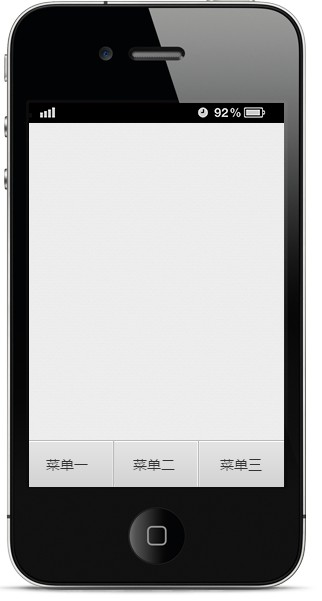
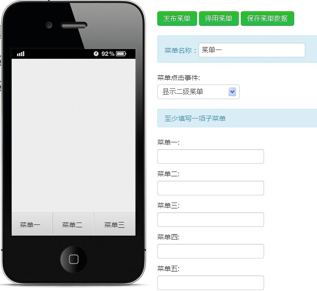
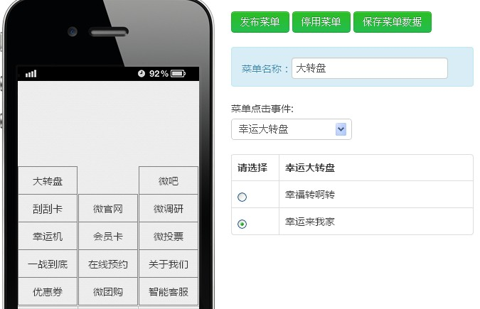

下面先介绍一下如何设置：
一、假设您已经申请到了自定义菜单的授权，那么可以点击系统界面中的“自定义菜单”。如图：
二、进入自定义菜单后，可看到手机模拟屏幕有菜单一、菜单二、菜单三等三个大菜单，如下：
三、接下来，点击任意菜单我们可以看到右侧的详细设置信息，包括这个菜单的子菜单，子菜单内容，菜单点击事件等，可以设置5个子菜单，即二级菜单。
四、设置好二级菜单后，可以编辑选择当前的活动，例如，如果您有两个幸运大转盘活动，您可以指定显示其中一个活动。设置好后，点击发布菜单即可发布并显示效果。
